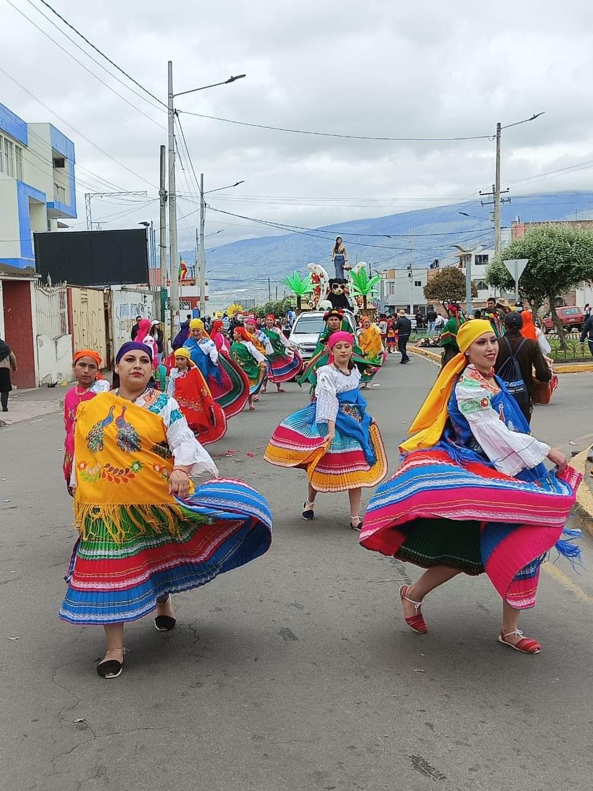

1. Convivencia cercana con la naturaleza
En San Cristóbal es común convivir con la fauna silvestre como lobos marinos, iguanas marinas y aves
exóticas. Los habitantes respetan profundamente la vida silvestre, y es costumbre ceder espacio a los animales,
incluso si se instalan en bancos del malecón o en puertas de casas.
2. Fiestas patronales y religiosas:
Puerto Baquerizo tiene celebraciones tradicionales
ligadas al catolicismo y la identidad local:
-Fiesta de San Cristóbal (25 de julio):
Día del santo patrono de la isla. Hay procesiones religiosas, música, danzas, desfiles y actividades náuticas.
-Semana Santa y Navidad:
Celebradas con procesiones, misas y encuentros familiares.